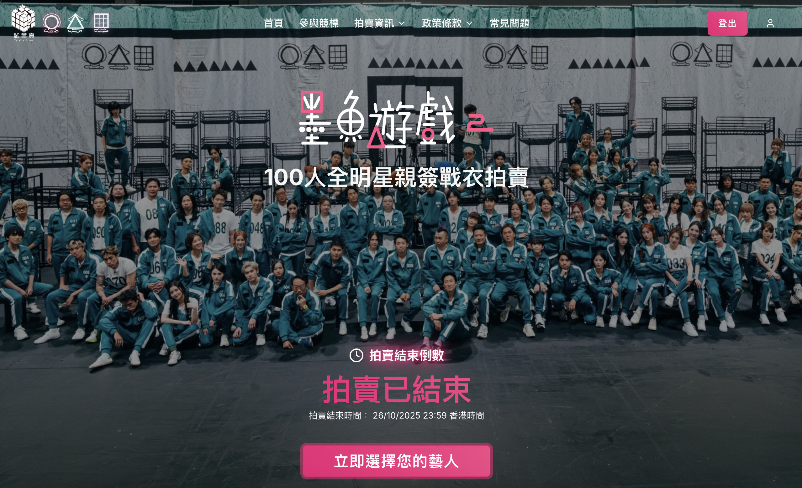

Trial & Error Signed-Costume Auction
Managing campaign changes while protecting the core user flow

A branded website for a signed-costume auction, bringing artist selection and participation information together for fans. The site included payment functionality, which needed to remain stable as changes were made. Development ran from July to September 2025, ahead of the October launch.
My role covered stakeholder change requests, UAT coordination and campaign performance analysis, with Replit Agent supporting development. Many requests concerned the UI, but their effects could extend to payment functionality and system stability.
After launch, visual adjustments had to be assessed against the needs of a live service. The priority was deciding what could be improved without disrupting the core user flow. A requested change could improve the appearance of the site while introducing a risk to its operation, so changes with those implications were put on hold. Keeping the existing experience working took priority over further visual adjustments.
Results: Launched in October 2025; the campaign recorded 6M page views.